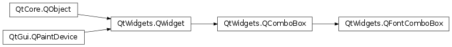

QFontComboBox¶
Synopsis¶
Functions¶
- def
currentFont() - def
fontFilters() - def
setFontFilters(filters) - def
setWritingSystem(arg__1) - def
writingSystem()
Slots¶
- def
setCurrentFont(f)
Signals¶
- def
currentFontChanged(f)
Detailed Description¶
The
PySide2.QtWidgets.QFontComboBoxwidget is a combobox that lets the user select a font family.The combobox is populated with an alphabetized list of font family names, such as Arial, Helvetica, and Times New Roman. Family names are displayed using the actual font when possible. For fonts such as Symbol, where the name is not representable in the font itself, a sample of the font is displayed next to the family name.
PySide2.QtWidgets.QFontComboBoxis often used in toolbars, in conjunction with aPySide2.QtWidgets.QComboBoxfor controlling the font size and twoPySide2.QtWidgets.QToolButtons for bold and italic.When the user selects a new font, the
PySide2.QtWidgets.QFontComboBox.currentFontChanged()signal is emitted in addition toPySide2.QtWidgets.QComboBox.currentIndexChanged().Call
PySide2.QtWidgets.QFontComboBox.setWritingSystem()to tellPySide2.QtWidgets.QFontComboBoxto show only fonts that support a given writing system, andPySide2.QtWidgets.QFontComboBox.setFontFilters()to filter out certain types of fonts as e.g. non scalable fonts or monospaced fonts.
-
class
PySide2.QtWidgets.QFontComboBox([parent=nullptr])¶ Parameters: parent – PySide2.QtWidgets.QWidgetConstructs a font combobox with the given
parent.
-
PySide2.QtWidgets.QFontComboBox.FontFilter¶ This enum can be used to only show certain types of fonts in the font combo box.
Constant Description QFontComboBox.AllFonts Show all fonts QFontComboBox.ScalableFonts Show scalable fonts QFontComboBox.NonScalableFonts Show non scalable fonts QFontComboBox.MonospacedFonts Show monospaced fonts QFontComboBox.ProportionalFonts Show proportional fonts
-
PySide2.QtWidgets.QFontComboBox.currentFont()¶ Return type: PySide2.QtGui.QFont
-
PySide2.QtWidgets.QFontComboBox.currentFontChanged(f)¶ Parameters: f – PySide2.QtGui.QFont
-
PySide2.QtWidgets.QFontComboBox.fontFilters()¶ Return type: PySide2.QtWidgets.QFontComboBox.FontFilters
-
PySide2.QtWidgets.QFontComboBox.setCurrentFont(f)¶ Parameters: f – PySide2.QtGui.QFont
-
PySide2.QtWidgets.QFontComboBox.setFontFilters(filters)¶ Parameters: filters – PySide2.QtWidgets.QFontComboBox.FontFilters
-
PySide2.QtWidgets.QFontComboBox.setWritingSystem(arg__1)¶ Parameters: arg__1 – PySide2.QtGui.QFontDatabase.WritingSystem
-
PySide2.QtWidgets.QFontComboBox.writingSystem()¶ Return type: PySide2.QtGui.QFontDatabase.WritingSystem
© 2018 The Qt Company Ltd. Documentation contributions included herein are the copyrights of their respective owners. The documentation provided herein is licensed under the terms of the GNU Free Documentation License version 1.3 as published by the Free Software Foundation. Qt and respective logos are trademarks of The Qt Company Ltd. in Finland and/or other countries worldwide. All other trademarks are property of their respective owners.